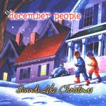

| Artist: | The December People |
| Title: | Sounds Like Christmas |
| Label: | Magna Carta MAX-9025-2 |
| Length(s): | 69 minutes |
| Year(s) of release: | 2001 |
| Month of review: | [11/2001] |
| 1) | Carol Of The Bells | 6.20 |
| 2) | We Three Kings Of Orient Are | 5.23 |
| 3) | I Heard The Bells On Christmas Day | 5.11 |
| 4) | Silent Night | 5.13 |
| 5) | What Child Is This? | 4.42 |
| 6) | Little Drummer Boy | 5.43 |
| 7) | 'twas The Night Before Christmas | 4.46 |
| 8) | Up On The Housetop/deck The Halls | 5.24 |
| 9) | Angels We Have Heard On High/christmas Lullabye | 6.07 |
| 10) | The First Noel | 5.45 |
| 11) | The Light | 3.44 |
| 12) | Merry X-mas (War Is Over) | 6.26 |
| 13) | A Christmas Poem #1 | 4.14 |
Steve Walsh takes on We Three Kings Of Orient Are. The song ought to be like Sting, but I like it too much for that. Lots of synth strings with a very up-tempo chorus and doubled chorus. Nevertheless, the song is much moodier then the previous and again I like it very much.
Short citations of Queen songs we find on I Heard The Bells On Christmas Day. The vocals make this a very Queen like track. Lots of piano here. The mood of Silent Night and Pink Floyd have been well doen. The doubled vocals are out of place here. Floyd never used these and it makes the music too unrestful, while Silent Night ought to be a very restful piece. The sax and high vocals of course remind of Great Gig In The Sky. The guitar playing is not even that Gilmour like, but there are plenty of Floyd citations that make the influence of that band very apparent.
Trent Gardner does What Child Is This? in Genesis, or should we say Banks style. The keyboards are the most typically Genesis of the track. Gardner's vocals sound a bit "swollen". Little Drummer Boy (Berry back at the vocals for the third time), finds us visiting ELP with a very percussive track.
The Led Zeppelin influenced track 'Twas The Night Before Christmas is sung by Shadow Gallery's Mike Baker. Large parts of this song are culled from Stairway To Heaven and Kashmir, but again I really like it. I can understand that people might raise their heckles over this, but I surely don't. It is fun to listen to and wonderfully well done. I do wonder how or whether Berry stays away from plagiarism in track like this. The album does not credit any of the Led Zeppelin guys.
Up On The Housetop/Deck The Halls is sung by Jack, brother of Kerry, Livgren. It is a merry track with typical Kansas keyboards. Angels We Have Heard On High/Christmas Lullabye should be like Peter Gabriel and yes it has some world music influences, but they have not come in willingly or naturally. Again it seems it is easier to imitate a band than a single musician.
One of the highlights for me on this album is the beautiful The First Noel, although I find the inclusion of parts of 21st Century Schizoid Man a bit out of place on a song like this. Also shows that the music of KC comes close to Van Der Graaf Generator.
The Light by Kansas is a rather short and new Christmas song. It is quite nice. Much nicer than the track that now follows: Merry X-Mas (War Is Over) sounds very cheap to me. It is more Alan Parsons Project than Beatles and makes me sleepy all over. The more intricate ending is quite okay.
In the closer Berry repeats parts of the previous tracks. Not very necessary.